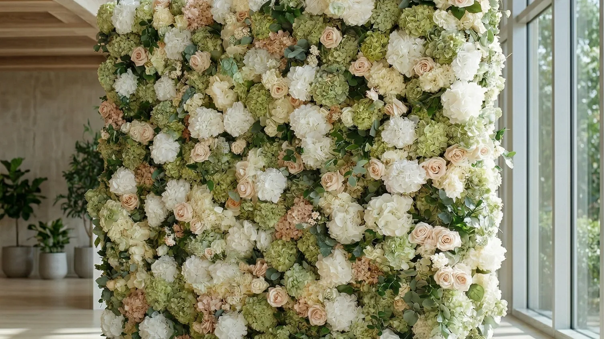

Looking for a flower wall rental in Vaughan for a wedding, bridal shower, baby shower, birthday, corporate event or private celebration? FLORINSKY offers hyper-realistic Real Touch floral designs in sizes up to 11 × 8 ft for events across Vaughan.
Our collection includes White & Ivory, Pink & Ivory, Green & Blush and Burgundy designs. Flower walls can be planned in traditional flat configurations or FLORINSKY’s semi-circular flower wall configuration, depending on the selected design, available space and intended photo setup.
Larger configurations up to 11 × 8 ft provide more floral coverage for wider group photographs, while Real Touch flowers are designed to maintain a natural, realistic appearance even when guests are standing close to the backdrop.
Beyond choosing the design, size and configuration, a successful flower wall setup depends on the actual venue layout, vendor access, loading route and available photo-area space. This guide explains the Vaughan-specific details worth checking before you book.
Flower Walls for Weddings, Showers and Events in Vaughan
Different events place different demands on the same backdrop.
For a bridal shower, baby shower or birthday, the flower wall may act primarily as a dedicated photo area. For a wedding, it may be used for guest photographs, a ceremony or as part of the reception design. At a corporate event, the available space may also need to accommodate registration, staging, sponsor displays or networking.
The useful question is therefore not simply, “Will the flower wall fit?”
It is:
What else has to happen around it?
The useful question is not "Will the flower wall fit?" It is: what else has to happen around it?
A freestanding backdrop needs an approved position. A functioning photo area also needs space for the people being photographed, enough camera distance and somewhere for the next group to wait without blocking a doorway, bar or service route.
For wedding-specific planning, the FLORINSKY wedding flower wall rental guide explains ceremony, reception and dedicated photo-area placement in greater detail.
Vaughan Is Not One Type of Event Environment
The City of Vaughan officially includes five constituent communities: Concord, Kleinburg, Maple, Thornhill and Woodbridge. Within the same municipality, the event landscape ranges from large banquet and convention facilities to estate venues, golf clubs, hotels, municipal event spaces and cultural properties.
That distinction matters when planning a flower wall.
A large banquet property may have several rooms operating at once. An estate may provide a dedicated vendor delivery system. A hotel has guest elevators, guest parking and event operations under the same roof, while those guest routes may not necessarily be the route intended for décor deliveries.
Vaughan Metropolitan Centre adds another environment altogether. Vaughan Studios & Event Space, for example, is located on the third level at 200 Apple Mill Road and includes flexible studios plus a rooftop terrace. The terrace is available only with specified indoor spaces, so “indoor versus outdoor” can be part of the room-selection decision rather than a separate question asked on event day.
The practical result is simple:
send FLORINSKY the exact event space, not only the venue name.
Send FLORINSKY the exact event space, not only the venue name.
Vaughan Event Venue & Flower Wall Planning Map
The FLORINSKY Vaughan planning map is designed to compare local event venues across different parts of the city and different venue types.
It is not a ranking and inclusion does not indicate that FLORINSKY has previously completed an installation at a particular property.
Use the map to identify the venue location, understand the type of property and review practical details worth confirming before arranging a flower wall setup.
Venue policies, room configurations and access arrangements can change. Confirm current requirements directly with the venue before your event.
Plan the Route From the Vehicle to the Final Backdrop Position
The street address is only the beginning of a delivery plan.
The useful route is:
vehicle arrival → approved unloading point → vendor entrance → elevator, stairs or corridor → exact event space → approved backdrop position
If one part is missing, a venue that appears easy to reach can still create a last-minute problem.
The Arlington Estate is a good Vaughan example. Its published venue information lists a climate-controlled underground delivery entrance and a dedicated underground freight elevator, in addition to separate event wings with private entrances. That means the property already distinguishes guest-facing access from operational delivery access.
At another property, the route may be completely different.
For this reason, do not send only a screenshot of the venue address. Ask the coordinator where an outside décor vendor is expected to arrive and which route reaches the actual room.
Multi-Level Venues Need a Vertical Setup Plan
A flower wall that fits comfortably in the event room still has to reach it.
For a multi-level property, confirm:
- which entrance décor vendors use;
- whether the route includes a passenger or service elevator;
- whether elevator use needs to be scheduled;
- whether any section of the route requires stairs;
- when the vendor may begin bringing equipment inside;
- how the removal route works after the event.
Vaughan Studios & Event Space makes this particularly relevant because the venue itself is on the third level. Venu Event Space also operates across two floors and promotes a second-floor ballroom. Novotel Toronto Vaughan Centre combines hotel operations with five meeting rooms and elevators serving the building.
“Elevator available” is therefore not the final answer.
The more useful question is:
Which elevator should the décor vendor use, and when can it be used for equipment?
"Elevator available" is not the final answer. Which elevator, and when can it be used for equipment?
Large Vaughan Venues Need the Exact Room or Room Combination
Several Vaughan properties can change substantially depending on which room or combination of rooms has been booked.
Paradise Banquet & Convention Centre publishes six ballroom configurations plus an outdoor garden, ranging from the Prince room to the combined Grand Queens space. The Venetian has four banquet rooms that can operate independently or connect into a larger space. Universal EventSpace publishes approximately 85,000 square feet across six function rooms and outdoor terraces.
A generic venue photograph is therefore not enough to plan the backdrop.
Ask for the actual floor plan or room name and identify:
- the usable wall or floor area;
- ballroom partitions;
- lobby entrances;
- stage or DJ position;
- bars and service stations;
- doors that must remain accessible;
- the position from which photographs will be taken.
If the venue combines or divides rooms, check the final event configuration rather than the layout shown during an unrelated tour.
Give the Photo Area Its Own Footprint
One useful way to test the floor plan is to stop thinking of the flower wall as one object.
Treat the photo area as several connected zones:
- the backdrop;
- the people being photographed;
- the camera position;
- the waiting area;
- the route out after the photograph.
This test is especially useful in large Vaughan ballrooms because a spacious room can feel much smaller after tables, a stage, dance floor, bars and service stations are installed.
A backdrop may fit perfectly into an empty corner during a venue tour and still create congestion once the complete event layout is in place.
Before approving the position, ask:
Where would six people waiting for the next photograph stand?
Where would six people waiting for the next photograph stand?
If the answer is inside the entrance, beside an active bar or on a server route, move the photo area on the floor plan before event day.

A Semi-Circular Flower Wall Changes the Floor Plan
A flat backdrop and a dimensional photo installation do not use floor space in the same way.
FLORINSKY can create a semi-circular flower wall configuration that brings the floral surface around the subjects instead of keeping the entire backdrop on one flat plane.
That option should be discussed with the venue earlier in the planning process because it changes the depth of the installation and the way guests enter the photo area.
If you are considering this format, review the FLORINSKY semi-circular flower wall option before the final floor plan is approved.
The useful planning question is not only whether there is enough wall width.
It is whether the room has enough usable depth for the installation, people and camera position without extending into circulation.
Use the Actual Room Light When Choosing a Flower Wall
Vaughan venues range from ballrooms with controlled interior lighting to rooms with extensive glazing, rooftop areas, gardens and golf-course views.
That means the same floral colour can look different from one venue to another and at different times of day.
When possible, evaluate the actual booked room rather than only the venue's main gallery. A daytime tour can also give an incomplete impression of an evening reception.
If you are comparing designs online, FLORINSKY's 3D preview allows you to examine the floral wall more closely before choosing.
Then compare the design against:
- expected room lighting;
- nearby windows;
- event colours;
- guest clothing;
- the photography direction.
The goal is not to make every element match. It is to make sure the people remain visually distinct from the backdrop and the flowers retain enough detail in photographs.
Outdoor Flower Walls at Private Vaughan Venues
A property with gardens, a patio or terrace should not be treated as automatic permission to place décor anywhere outdoors.
Ascott Parc, for example, publishes indoor event spaces together with extensive gardens and a gazebo. Eagles Nest Golf Club offers indoor and outdoor ceremony spaces plus a private terrace overlooking the golf course and pond. Universal EventSpace also lists outdoor terraces.
For an outdoor flower wall, confirm the exact position with the venue.
Check:
- whether freestanding décor is allowed at that location;
- the surface under the installation;
- the carrying route;
- whether the location changes guest or service circulation;
- the expected photography direction;
- the approved indoor or covered backup location.
Do not wait until poor weather becomes likely to decide where the backup photo area will go.
The alternative location should already make sense within the event layout.
City-Owned Property and Special Events Require a Separate Check
Private venue approval and City requirements are not the same thing.
The City of Vaughan currently requires Special Event Permits for various activities including outdoor exhibitions, festivals, processions and street parties/social events. For events using City-owned facilities, the City instructs organizers to book the facility before applying for the applicable Special Event Permit. Its application process can also require a site plan showing permanent and temporary structures.
This does not mean every private celebration in Vaughan requires the same permit.
It means an organizer should not assume that reserving City property automatically approves a freestanding décor installation.
If your event is taking place on City property, confirm the requirements for the exact booking and include the proposed flower wall in the discussion when appropriate.
What to Confirm Before Booking a Vaughan Flower Wall
| Information | Why it matters |
|---|---|
| Event date | Confirms availability |
| Venue name and full address | Identifies the property |
| Exact ballroom, studio, hall or outdoor area | Prevents planning for the wrong space |
| Approved backdrop position | Confirms the flower wall may be installed there |
| Vendor entrance | Defines the real carrying route |
| Unloading instructions | Prevents arrival at the guest entrance by mistake |
| Elevator or stair information | Identifies vertical access constraints |
| Earliest vendor access time | Determines the installation window |
| Required completion time | Ensures setup is finished before venue deadlines |
| Removal procedure | Confirms how access works later in the event |
| Floor plan, if available | Allows the photo area to be evaluated as part of the room |
| Outdoor backup position, if relevant | Prevents dependence on one outdoor location |
You do not need to know every answer before contacting FLORINSKY.
The important part is identifying what still needs to be confirmed.
Vaughan Areas We Serve
FLORINSKY provides flower wall rental throughout Vaughan.
The City officially identifies Concord, Kleinburg, Maple, Thornhill and Woodbridge as its five constituent communities. Service also covers event addresses around Vaughan Metropolitan Centre and other locations within Vaughan.
For delivery planning, the exact venue address and event space matter more than the neighbourhood name.
FLORINSKY also provides flower wall rental throughout Toronto and the GTA.
Ten Vaughan Venues to Consider When Planning Your Backdrop
The venues below are planning examples, not rankings, endorsements or claims that FLORINSKY has previously completed installations at these properties.
They were selected because they demonstrate different Vaughan setup conditions that may affect a flower wall.
The Arlington Estate
The Arlington Estate operates two separate event wings, and its published information lists private entrances as well as a climate-controlled underground delivery entrance and dedicated freight elevator. This is a useful example of why vendor access should be requested directly rather than inferred from the guest entrance. If your event is here, provide FLORINSKY with the exact wing and confirm which delivery route the venue wants outside décor providers to use.
Vaughan Studios & Event Space
This City-operated venue sits on the third level at 200 Apple Mill Road and includes flexible studios, a gallery, event kitchen and rooftop terrace. The terrace is an add-on to specific indoor bookings rather than a standalone event space. For a flower wall, confirm the booked studio, the equipment route to the third floor and whether the backdrop is intended for the indoor room or terrace.
Paradise Banquet & Convention Centre
Paradise offers six ballroom configurations plus an outdoor garden. Because the property can accommodate events in very different room sizes, the ballroom name matters more than the venue name alone. Ask which room is booked, whether the flower wall will be in the ballroom, lobby or garden area and which vendor entrance should be used.
Universal EventSpace
Universal EventSpace publishes six function rooms across approximately 85,000 square feet together with outdoor terraces. Public wedding feedback frequently praises the food, planning support and staff, while the building's scale makes room identification especially important. Provide the exact studio and level, and confirm whether a terrace is part of the booking before designing an indoor-outdoor photo plan.
Ascott Parc Event Centre
Ascott Parc combines indoor event halls with gardens, conservation-land surroundings and an outdoor gazebo. Its spaces vary substantially in size and format, so a generic “Ascott Parc” setup instruction is not enough. Confirm the exact hall or garden area, the approved outdoor décor position and an indoor alternative before finalizing an outdoor photo setup.
The Venetian Banquet & Hospitality Centre
The Venetian has four distinct banquet rooms that can be used individually or connected into a larger event space. A room combination can change the position of partitions, entrances and the usable area around the photo zone. Send the exact hall combination and current floor plan before selecting the final backdrop position.
Château Le Jardin
Château Le Jardin operates large divisible event spaces. Its East Wing includes three private entrances and two private lobbies and can be separated into the Renaissance, Champagne and Le Parisien ballrooms. That makes the exact wing, ballroom and entrance essential information for a décor delivery rather than an administrative detail.
Eagles Nest Golf Club
Eagles Nest offers the Great Hall, smaller function rooms, an outdoor terrace and indoor and outdoor ceremony options. The property is also an active golf facility. Public wedding feedback is strongly positive about the setting, food and staff, but some guests have noted that golf activity can overlap with wedding-day use of the property. If your plan includes outdoor photographs or a ceremony area, confirm which spaces are reserved for your event and whether other property activity could affect the planned photo location.
Novotel Toronto Vaughan Centre
Novotel publishes five meeting rooms, with its largest meeting space accommodating events substantially larger than a small private room. The hotel also provides elevators and extensive on-site parking. For décor planning, however, guest parking does not automatically answer the vendor-unloading question. Confirm the exact event room and the route the hotel wants outside vendors to use for equipment.
Venu Event Space
Venu Event Space describes approximately 100,000 square feet across two floors and includes a second-floor ballroom. Its scale makes the floor and actual event room important parts of the delivery information. Confirm the correct entrance, vertical carrying route, room and setup window before treating the Highway 7 address as a complete delivery instruction.
Flower Wall Rental Vaughan FAQs
Do you provide flower wall rental with delivery in Vaughan?
Yes. FLORINSKY provides flower wall rental in Vaughan with delivery, professional setup and removal.
Include the exact venue, room or ballroom and any vendor-access instructions in your inquiry.
What types of Vaughan events can use a flower wall?
Flower walls can be planned for weddings, bridal showers, baby showers, birthdays, engagement parties, anniversaries, corporate events and other suitable celebrations.
The correct placement depends on the event format and actual venue layout.
How much does a flower wall rental in Vaughan cost?
Send your event date, Vaughan venue, exact event space and preferred flower wall to receive a quote.
The quote should be based on the actual rental and setup requirements rather than a generic city estimate.
Can a flower wall be installed outdoors in Vaughan?
Potentially.
The venue must approve the exact location, and the surface, access route and conditions need to be suitable for the proposed installation. An indoor or covered backup position should also be identified in advance.
Do I need a City permit for a flower wall in Vaughan?
Not every private event follows the same municipal process.
Some types of special events require a City of Vaughan permit, and events using City property may involve additional booking and approval requirements. Confirm the rules for the exact event and property rather than assuming that a venue or park reservation automatically approves outside décor.
What should I send if my Vaughan venue has several rooms?
Send the exact hall, ballroom, studio or wing.
If available, also provide the floor plan, vendor entrance, unloading instructions, stairs or elevator information, approved backdrop position and installation window.
What if my event is on an upper floor?
Ask the venue which entrance and elevator outside décor vendors should use and whether access has to be scheduled.
The presence of a guest elevator does not necessarily mean it is the approved equipment route.
Get a Quote
Planning an event in Vaughan?
Send your event date, venue name and full address, exact room or event space, preferred flower wall and any access information already provided by the venue.
If the proposed location is outdoors, also include the approved outdoor position and backup location.
Get a quote.